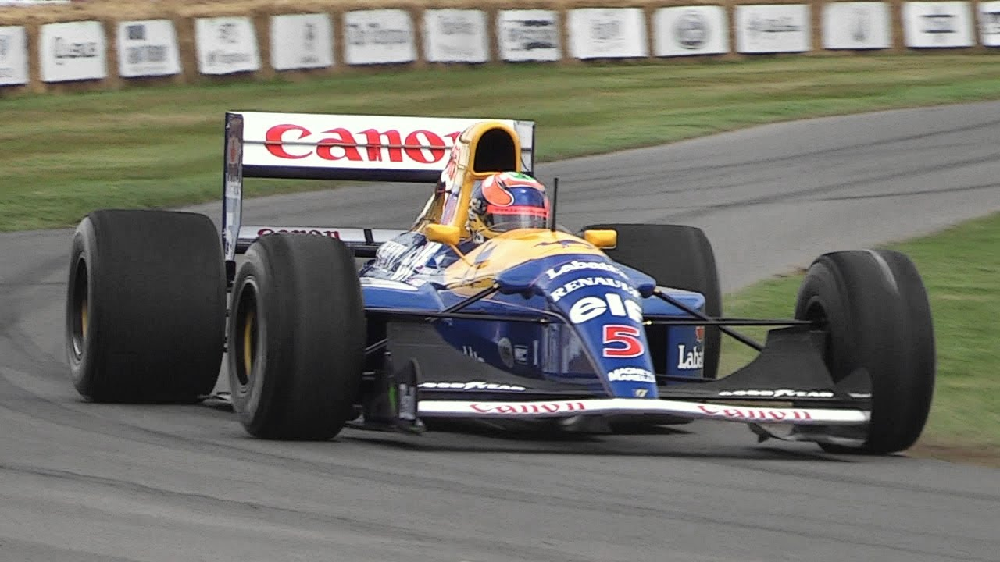

Williams Racing

The Family Team
The Williams Racing Formula 1 team is the oldest third oldest in the sport, founded in 1977 by Frank Williams. The team was family run from 1977 to 2020 by Frank Williams and then his daughter Claire Williams but recently it has been sold to Dorilton Capital. It is one of the most successful teams in Formula 1 and peaked in the 90s with champions such as Alain Prost, Damon Hill and Jacques Villeneuve however in recent years they have found themselves at the back of the grid. Though, things are looking up for the team with team principle James Vowles and 2 skilled and experienced drivers, Carlos Sainz and Alex Albon they find themselves currently in the top 5.
